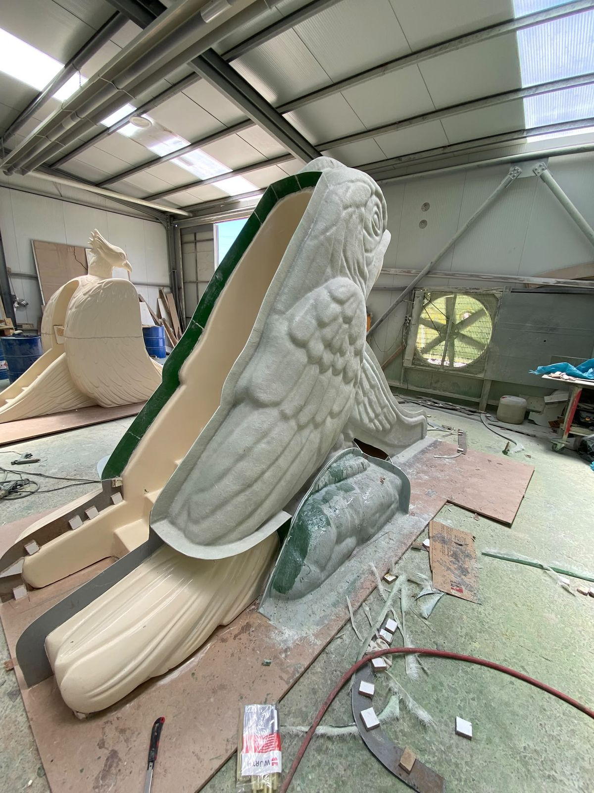
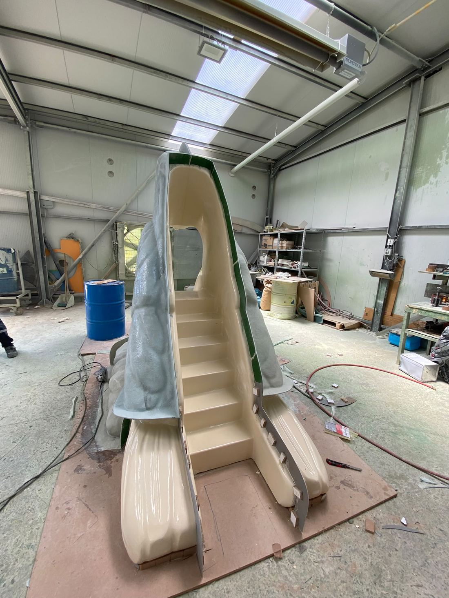
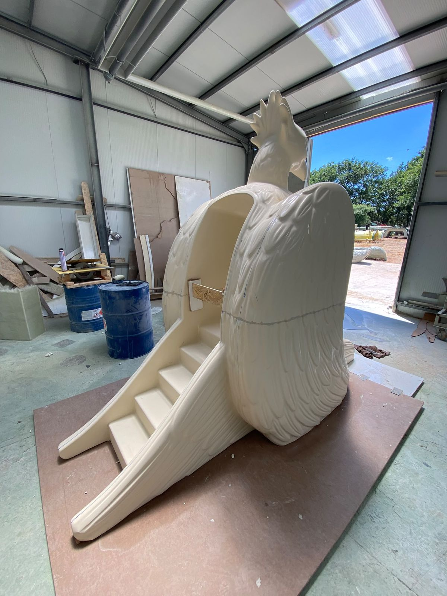
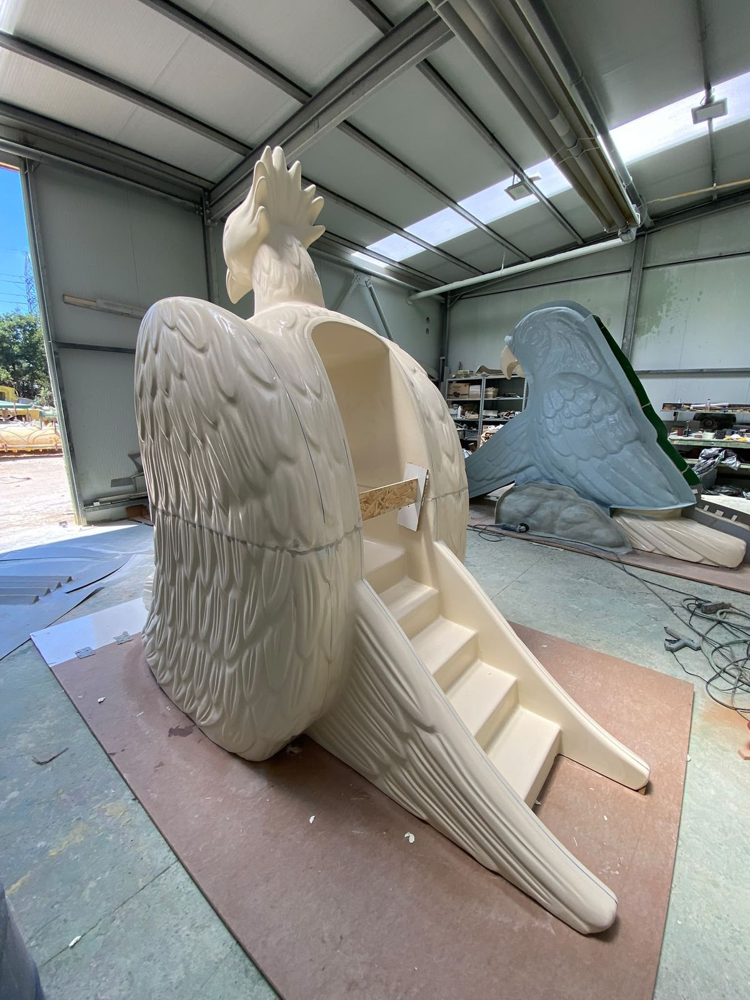
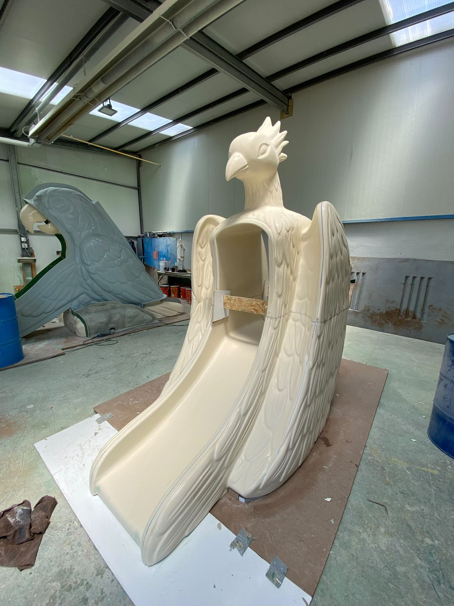

01
Kalıp & Ham Fiberglass
Kalıp içine cam elyafı takviyeli polyester (CTP) katmanları elde döşenir ve kürlendikten sonra çıkarılır. Bu aşamada figür henüz krem/beje renklidir; kabartma detaylar (tüy dokusu, taç, kanat şekli) belirgindir.




